Lần đầu tiên mở Word, cửa sổ Start Screen sẽ xuất hiện và hiển thị trên màn hình. Tại đây người dùng sẽ có thể tạo một văn bản mới, chọn một template và truy cập các tài liệu mới chỉnh sửa gần nhất. Từ màn hình Start Screen, điều hướng và chọn Blank document để truy cập giao diện Word.
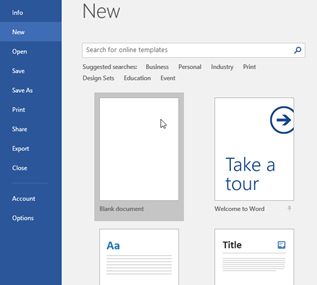
Hình 4.1. Màn hình khởi động Microsoft Word 2019
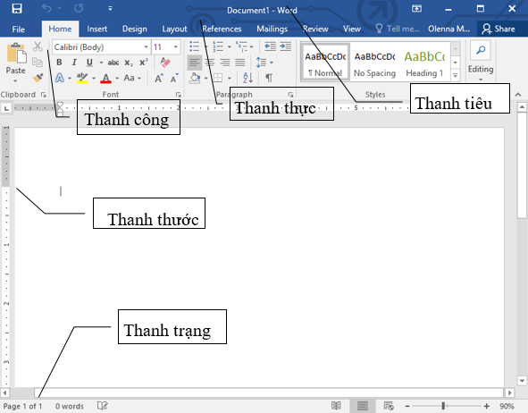
Hình 4.2. Màn hình cửa sổ làm việc của MS Word 2019
Giống như các phiên bản khác, Word 2019 tiếp tục sử dụng các tính năng như Ribbon và Quick Access Toolbar - nơi người dùng sẽ tìm thấy các lệnh để thực hiện các nhiệm vụ, thao tác đơn giản trên Word.
1.2 Tabs trên thanh Ribbon
Các phiên bản Word từ 2007 đến nay sử dụng hệ thống
Ribbon theo tab (thẻ lệnh) chứ không
còn sử dụng menu truyền
thống như trước nữa. Ribbon
là công cụ chứa toàn bộ nội dung điều khiển của chương trình,
bao gồm các Tab (hay còn gọi là các
thẻ) và các commands (các lệnh) thực thi, điều khiển. Người dùng có thể tìm
thấy các tab này ở gần phía trên cửa
sổ giao diện Word.
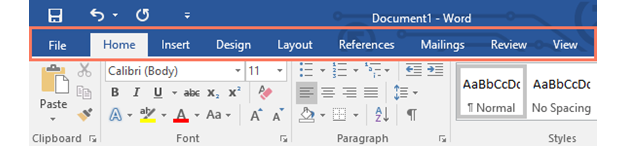
Hình 1.3. Các thẻ trên thanh công cụ
1.3 Chức năng của các Tabs• File: Chứa các mục làm việc với tệp như mở đóng tệp, in ấn, …
• Home: Chứa các công cụ về định dạng, …
• Insert: Chứa các mục về chèn ký tự, tranh ảnh, bảng, ký tự đặc biệt, …
• Design: Chứa các mục về thiết kế, định dạng mẫu văn bản
• Page Layout: Chứa các mục về đặt lề, kích thước trang văn bản, đặt vị trí ảnh, …
• References: Chứa các mục đặt chú thích, kiểu cách, định dạng mục lục, …
• Mailings: Chứa các công cụ về định dạng kiểu phong bì thư, trộn thư, …
• Review: Chứa các lệnh về kiểu tra ngôn ngữ, ghi chú, …
• View: Chứa các lệnh về hiển thị màn hình, thanh thước, ngắt cửa sổ, …
Tương ứng mỗi tab lại chứa nhiều group (nhóm) liên quan đến các lệnh. Cho ví dụ, group Font trên tab Home chứa các lệnh chỉnh sửa định dạng văn bản cho tài liệu văn bản của người dùng.
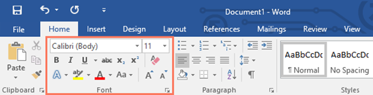
Hình 4.4. Chức năng của các Tabs
Ngoài ra một số group khác có thêm biểu tượng mũi tên nhỏ ở góc dưới cùng bên phải, khi người dùng click vào biểu tượng mũi tên đó sẽ hiển thị thêm nhiều tùy chọn khác nhau (hay gọi đó là Hộp thoại của nhóm lệnh)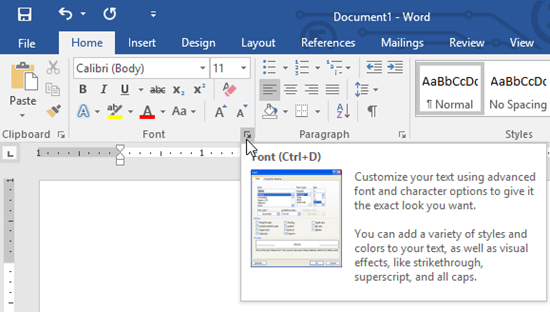
1.3 Hiện và ẩn thanh
Nếu cảm thấy thanh Ribbon chiếm dụng không gian màn hình quá nhiều, người dùng có thể thao tác vài bước để ẩn thanh Ribbon đi. Để làm được điều này, click vào biểu tượng mũi tên Ribbon Display Options ở góc trên cùng bên phải thanh Ribbon, sau đó chọn một tùy chọn mô tả từ menu drop down:
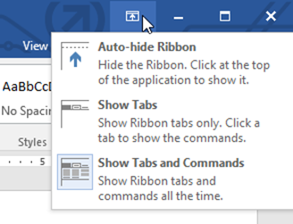
Hình 4.5. Cách ẩn và hiện thanh Ribbon
- Auto-hide Ribbon: Tự động hiển thị tài liệu của người dùng ở chế độ toàn màn hình và ẩn thanh Ribbon hoàn toàn. Để hiển thị Ribbon, click vào lệnh Expand Ribbon ở góc trên cùng màn hình.
- Show Tabs: Tùy chọn này để ẩn tất cả các lệnh trong group khi người dùng không sử dụng đến, nhưng các tab thì vẫn hiển thị. Để hiển thị Ribbon, rất đơn giản chỉ cần click vào một tab.
- Show Tabs and Commands: Tùy chọn này để tối đa hóa Ribbon. Tất cả các tab và lệnh vẫn sẽ được nhìn thấy. Tuy nhiên theo mặc định tùy chọn này sẽ bị ẩn trong lần đầu tiên người dùng mở Word.
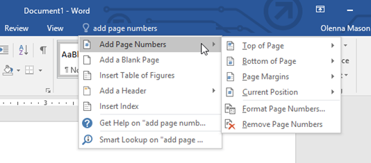
Hình 4.6. Cách sử dụng tính năng Tell me
Nếu đang gặp khó khăn trong việc tìm kiếm các lệnh
muốn sử dụng, tính năng Tell me có thể giúp người dùng làm điều này. Tính năng này hoạt động tương tự như thanh tìm kiếm (Search bar) thông thường: Nhập tùy
chọn muốn tìm kiếm, và trên màn hình sẽ hiển
thị danh sách các tùy chọn. Người dùng có thể sử dụng lệnh trực tiếp từ
menu mà không cần tìm trên thanh Ribbon.
1.4 Quick Access Toolbar (thanh truy cập nhanh)
Nằm ngay trên thanh Ribbon, Quick Access Toolbar cũng cho phép người dùng truy cập các lệnh phổ biến mà không cần phải chọn tab. Theo mặc định, Quick Access Toolbar hiển thị các lệnh như Save, Undo và Redo, nhưng người dùng có thể thêm các lệnh khác vào nếu muốn.
Thêm lệnh vào Quick Access Toolbar
Để thêm lệnh vào Quick Access Toolbar, người dùng thực hiện theo các bước dưới đây:
B1: Click vào biểu tượng mũi tên dạng thả nằm góc bên phải Quick Access Toolbar.
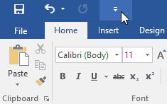
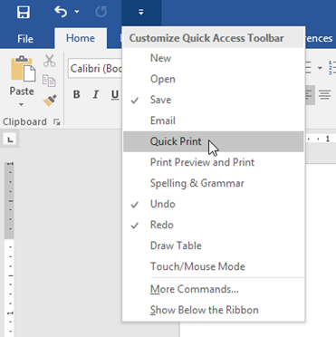
B3: Và lệnh sẽ được thêm vào Quick Access Toolbar.
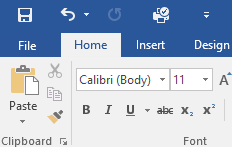
1.5 Thanh trạng thái - Status bar
Đây là thanh công cụ nằm phía dưới của màn hình soạn
thảo, chứa các thông số để người
dùng theo dõi được các thông tin cơ bản của văn bản đang soạn thảo, như: số
trang hiện tại, tổng số trang đang có
trong văn bản, tổng số từ đã soạn thảo. Ngoài ra góc bên phải của thanh
trạng thái còn cho phép người dùng chọn chế
độ xem văn bản
Bấm chuột phải vào thanh trạng thái, người dùng có thể
tùy chỉnh thêm các tính năng hoặc thông số muốn hiển thị lên đây
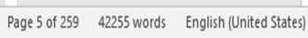
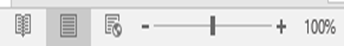
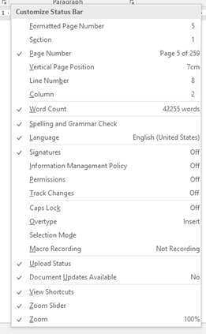
Hình 4.7. Các thanh trạng thái trong Word
1.6 Khung tác vụ
Đây là chức năng giúp người dùng di chuyển quanh văn bản của mình một cách nhanh chóng, tìm kiếm nhanh một từ, cụm từ trong văn bản hoặc chỉnh sửa các thông số của các đối tượng được chèn vào trong văn bản
1.6.1 Navigation Pane.Để mở Navigation Pane, kích vào nút Find trong nhóm Editing của tab Home, hoặc nhấn phím tắt Ctrl + F, khung này sẽ xuất hiện phía bên trái của màn hình soạn thảo:
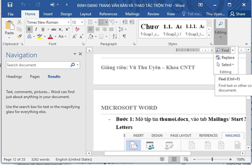
Hình 4.8. Navigation Pane
Theo mặc định, bảng điều khiển Navigation sẽ được mở ra ở phần bên trái của cửa sổ Word. Có 3 mục để lựa chọn:
- Headings là các giá trị tìm kiếm được phân theo mục, việc phân theo mục này phải được thiết lập từ trước.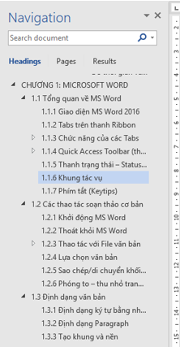
- Pages tìm kiếm theo từng trang nếu đó là văn bản dài, có nhiều trang
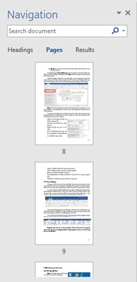
- Results đưa ra kết quả của quá trình tìm kiếm một từ hoặc một cụm từ nào đó trong văn bản.
Trong hộp nhập liệu Search Document trên cùng, nhập vào cụm từ người dùng muốn tìm. Kết quả sẽ hiển thị tự động (nếu không người dùng nhấn Enter hoặc biểu tượng chiếc kính lúp bên phải của hộp search).
Một hình thumbnail nhỏ hiển thị cho những đoạn văn bản xung quanh mỗi từ/cụm từ được nhập vào. Để nhảy tới đoạn văn bản này, chỉ cần kích vào thumbnail thích hợp. Các từ/cụm từ được tìm thấy sẽ có màu đậm nổi bật giúp người dùng dễ dàng xác định chúng.
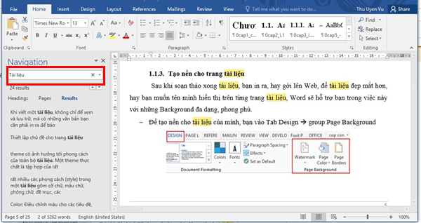
Chú ý: Chỉ cần di chuyển cho trỏ chuột tới mỗi thumbnail người dùng sẽ nhìn thấy vị trí số trang của đoạn văn bản đó, đồng thời nếu kích chuột vào thumbnail người dùng sẽ được nhảy tới trang tương ứng.
Navigation Pane không chỉ tìm kiếm chữ mà có rất nhiều chức năng, tính trong Navigation Pane người dùng có thể tìm thấy nếu nhấn vào phần mũi trên trong Navigation Pane, tại đây chúng ta sẽ có các tính năng sau:
- Options: Nơi cho phép tùy chỉnh tìm kiếm Navigation Pane.
- Advanced Find: Chế độ tìm kiếm nâng cao.
- Replace: Chế độ thay thế từ tron Word.
- Go To: Chế độ nhảy bước trong văn bản, cho phép người dùng di chuyển đến một vị trí nhất định trong văn bản.
- Graphic: Chế độ tìm kiếm ảnh trong Navigation Pane.
- Tables: Chế độ tìm kiếm trong tables, áp dụng bảng biểu.
- Equations: Chế độ tìm kiếm theo công thức.
- Footnotes/Endnotesaz: Chế độ tìm kiếm theo chú thích sẵn có trong Navigation Pane.
- Comments: Tìm kiếm các chú thích, nhận xét trong Word.
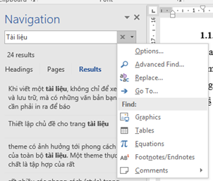
1.6.2 Format Option
Để mở khung Format Option, người dùng bấm chuột phải vào bất kỳ đối tượng nào trong văn bản và chọn mục Option …, khung này sẽ xuất hiện ở phía bên phải của màn hình soạn thảo:
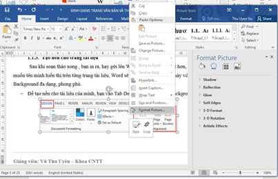
Hình 1.9. Cách mở khung Format Option
1.7 Phím tắt (Keytips)
Trong quá trình làm việc trên máy tính, để đẩy nhanh các thao tác, nhất là các thao tác soạn thảo văn bản, thì việc sử dụng các tổ hợp phím tắt sẽ giúp ích rất nhiều cho người dùng. MS Word cung cấp cho người dùng rất nhiều các phím tắt trong soạn thảo văn bản.
Tuy nhiên trong các phiên bản Office hiện nay, ngoài các tổ hợp phím tắt quen thuộc người dùng phải nhớ để sử dụng. Thì bây giờ, có thể sử dụng các tổ hợp phím tắt trong Word nói riêng và trong các ứng dụng Office nói chung bằng cách bấm phím ALT -> Trên Ribbon lúc này sẽ xuất hiện các chữ cái đại diện cho các phím tắt được hiện lên
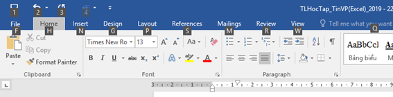
Hình 4.10. Bấm phím Alt để mở phím tắt
Cách sử dụng hệ thống phím tắt này đơn giản là bấm vào chữ cái đại diện cho 1 tab nào đó muốn dùng, các lớp phím tắt sẽ tiếp tục được hiện ra. Điều này giúp cho người dùng thuận tiện trong quá trình thao tác và không phải ghi nhớ nhiều
Ví dụ: Muốn mở tab Insert để sử dụng các lệnh chèn bảng (Table) trong đó thì người dùng thực hiện các thao tác như sau: Bấm phím Alt -> N -> T
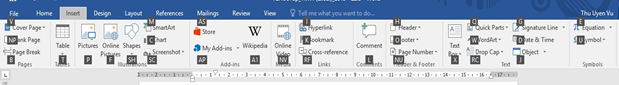
Trong các phần tiếp theo, tài liệu này sẽ giới thiệu các tổ hợp phím tắt tương ứng với các lệnh, các thao tác thường xuyên được sử dụng trong quá trình soạn thảo, định dạng văn bản trên MS Word.